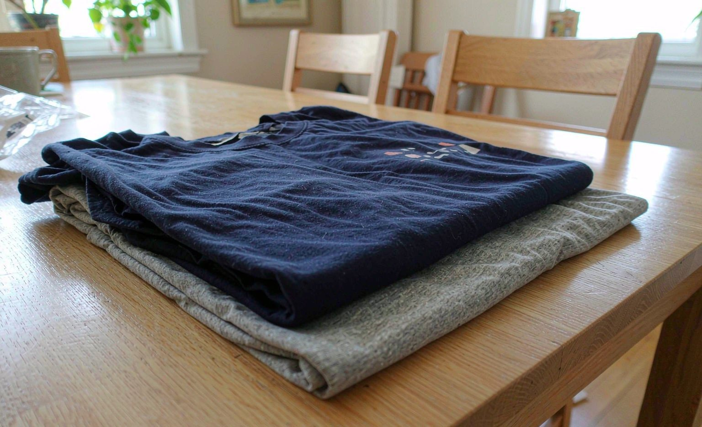

Short answer: designing matching custom t-shirts for our tenth anniversary cost me $58.90 total and became the gift my husband references the most. The shirts took eight days to arrive, the cotton felt soft, and the print has survived every wash so far. We recommend choosing a simple design with one bold line of text and ordering one size up for a relaxed fit.

Why Matching Shirts for a Tenth Anniversary
We are not a couple who wears couple things. But ten years felt like it deserved something a bit ridiculous and a bit sentimental, so I settled on matching shirts with the year we met on the front and a private joke on the back. The joke is too embarrassing to repeat here, which is exactly the point of a personalized gift.
Designing the Shirts
I ordered through Vistaprint's t-shirt builder, and its design tool was simpler than I expected. The whole design took under an hour:
- Chose a premium cotton tee in two colors (navy for him, heather gray for me)
- Added a single line of text on the chest in a bold block font
- Put the anniversary date small on the left sleeve
- Ordered his in large, mine in medium, both one size up from our usual fit
The one-size-up advice came from a friend who designs shirts regularly, and she was right. The shirts fit relaxed instead of stretched, which is how we both prefer to wear tees.
Print Methods I Considered
I compared three print methods before ordering, mostly by reading the seller's own comparison and some independent reviews:
| Method | Feel of the Print | Durability | Price per Shirt |
|---|---|---|---|
| Screen printing | Sits on top, slightly stiffer | Excellent for simple text | Lowest in bulk, higher for one-offs |
| DTG (direct to garment) | Soft, feels part of the fabric | Very good with proper care | Mid range for single shirts |
| Heat transfer vinyl | Smooth, rubbery texture | Good but can peel at edges over years | Budget friendly |
For one line of text, any of the three would have worked. I went with DTG because the print disappears into the cotton and I did not want to feel the design when wearing it. Our guide to sublimation versus DTG goes deeper on how each method ages.
The Reveal and His Reaction
He unwrapped the folded shirts, read the front, flipped them, read the back, and laughed for a genuinely long time. Then he wore his that same day to walk the dog. Three months later it is in his regular rotation, which is the highest compliment a gag gift can get.
How the Shirts Have Held Up
About ten washes each so far, washed inside out on cold and hung to dry. The print looks essentially the same as day one. The navy shirt has faded very slightly all over, which is normal cotton behavior rather than a print problem.
Tips for Your Own Matching Set
- Keep the design to one or two elements; busy designs look cluttered at chest size
- Check the size chart measurements, not just the letter sizes, since sellers vary
- Order at least two weeks ahead so you have room for a reprint if the quality disappoints
- Wash inside out on cold from the very first wash to protect the print
Frequently Asked Questions
How much do custom couple t-shirts cost?
For basic cotton tees with simple text, budget roughly $25 to $30 per shirt from most sellers. My two premium cotton tees from Vistaprint came to $58.90 with a promo code. Premium fabric, all-over prints, or multiple design elements push the price up from there.
Which print method is best for custom t-shirts?
DTG gives the softest feel on cotton and handles detailed designs well. Screen printing is the most durable choice for simple text and bulk orders. Both last for years with cold washes.
How do I pick sizes for two people?
Use each seller's measurement chart and consider ordering one size up for a relaxed fit. When in doubt, check a shirt the person already owns and compare its measurements.
How long does delivery take for custom shirts?
Expect three to five days of production plus a few days of shipping. My order arrived in eight days total, so ordering two weeks ahead of an event is a comfortable buffer.